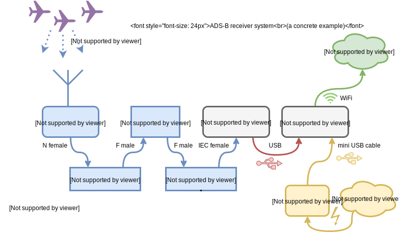
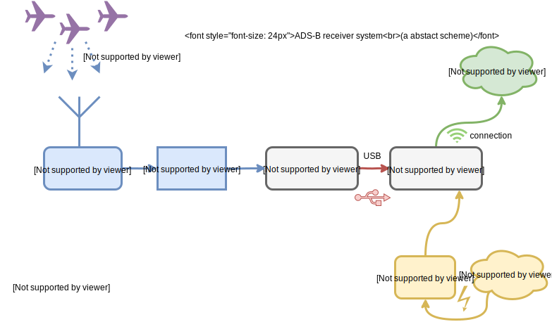
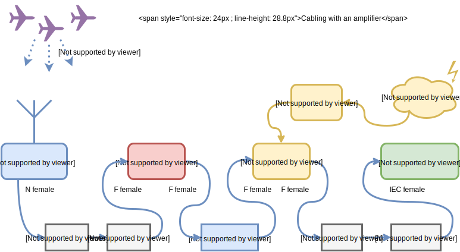

ADS-B Part 2 - Hardware
We'll explore how to choose and set up hardware for our ADS-B receiver, go through the various decisions and show a concrete example.

ADS-B Flight Tracking for the Curious series
- Part 1: Why should be build our own ADS-B receiver and roughly how it works?
- Part 2: Hardware - architecture an installation
- Part 3: Software for feeding data
- Part 4: Software for viewing data
- ...
Introduction
As we discussed in the first part our goal is to send data to the services and exchanges we talked about in the introduction. The hardware should not be expensive and should be relatively easy to install for a normal programmer with basic Linux skills. As always this is just description of my experience and your milage may vary.
In my installation I wanted to support the following sites: FlightRadar24.com, FlightAware.com, PlaneFinder.net, ADSBexchange.com and CZADSB.cz and also be able to archive my data. So which hardware to choose?
If you'd like to support only one site, the easiest path is to buy or borrow specialized equipment that various services provide in order to get new data sources. The problem is that you cannot or should not modify it.
- FR24 receiver - free
- FlightFeeder - free for sites with no coverage
In for following text I'd like to summarize what I've found during a few evenings of web researching for what's possible and available.
TL;DR - my hardware list
This is the hardware I bought for my project. We'll look at the details in a few moments.

| part | description | price |
|---|---|---|
| DVB-T tuner | RTL2832/R820T, IEC | 559 CZK |
| parts for DIY antenna (quarter-wave whip): | ||
| soldering N panel connector | N-512 | 86 CZK |
| old 1mm thick wire | for the whip | free |
| small old can | to serve as a ground plane | free |
| cables & adapters: | ||
| N male - F female adapter | CVP-107 | 70 CZK |
| RG6 cable | 11m | 165 CZK |
| 2 male cable F connectors | 2x 20 CZK | |
| IEC male - F female adapter | CVP-308 | 13 CZK |
| computer: | ||
| Raspberry Pi 3 | 1399 CZK | |
| RPi case | 213 CZK | |
| RPi power source | 2.5A, 5.1V, 13W | 399 CZK |
| microSD card | 16 GB | 199 CZK |
| total cost: | 3143 CZK (~130 USD) |
If I didn't hurry I could buy the DVB-T for half the price. Also I bought an amplifier and a few supporting parts. However, there was a problem with the amp/injector combination, so I should have chosen another one.
Concrete scheme of the hardware architecture of my installation:

Now let's dig deeper how to choose your own the hardware and learn how to decide.
Going backwards along the requirements
Abstract scheme of the hardware architecture:

SDR receiver
The commercial sites usually provide you with a convenient software package to feed their service that you can install with minimal fuss. What is common for all the sites is that they support feeding data in format offered by a program called dump1090. And that is good for us, we can use one program to feed them all.
dump1090 uses the RTLSDR driver for Software Defined Radio which works with a family of DVB-T tuners. For us it means we can choose a cheap DVB-T stick compatible with RTLSDR and watch planes instead of TV.
Choosing a compatible DVB-T stick
The RTLSDR driver project exploits some tricks in one particular chipset Realtec RTL2832. There exist DVB-T sticks on the market with different chipsets but this driver cannot utilize them. It may not always be apparent which chipset a particular tuner contains but fortunately there are some tables which map the tuner models and chipsets:
- http://sdr.osmocom.org/trac/wiki/rtl-sdr - official list of supported hardware
- http://rtlsdr.org/
- http://elinux.org/RPi_VerifiedPeripherals#USB_TV_Tuners_and_DVB_devices
- https://www.linuxtv.org/wiki/index.php/DVB-T_USB_Devices/Full
- http://www.rtl-sdr.com/about-rtl-sdr/
Note there are two relevant parts of a DVB-T stick - chipset and tuner.
The supported chipset is Realtec RTL2832U. It comes with various tuners: Rafaelo Micro R820T, R820T2, R828D, Elonics E4000 (discontinued), Fitipower FC0013. All are fine.
Chipsets unsupported by the driver are IT9135, IT9130, AF9135. The Fitipower FC0012 and FCI FC2580 tuners may not suitable due to not covering the 1090 Mhz band in their range.
The DVB-T stick I bought contains the Realtec RTL2832U chipset and Rafaelo Micro R820T tuner.
Since I was a bit in a hurry I bought it a local store for about 20 USD. Otherwise I'd buy this one: RTL2832U + R820T Mini DVB-T + DAB+ + FM USB Digital TV Dongle - Black for only 10.5 USD.
List of compatible sticks found in Czech republic
Just to make sense of the brands:
Good:
- DVB-T+DAB+FM+SDR - RTL2832U/R820T
- Sencor SDB 522RT - RTL2832U/E4000
- Logilink VG0002a - RTL2832U/FC0013
- Not Only TV Tuner DVB-T LV5T Deluxe USB 2.0 - RTL2832U
- LifeView LV5T Deluxe - RTL2832U
- Cabletech DVBT - RTL2832U
Bad:
- Aver - AF9013, AF9035
- Evolveo Mars - IT9135
- Evolveo Venus - IT9135
- Technaxx - IT9135
- Omega T300 - IT9135
- Media-Tech MT4171 - IT9130
- Terratec Cinergy - RTL2832U/FC0012
Anyway, I haven't found any better local deal than on DX.
Computer
For decoding the ADB-B message stream via the said DVB-T tuner we need a computer. Basically any computer capable of running Linux, with a USB connector and connected to the internet is fine. Some ADS-B software also runs on OS X or Windows but it is out of scope of this series (I don't use Windows and OS X will be covered briefly just for testing the DVB-T stick).
We need it to run 24/7, so that if its power consumption is low we save on electricity bills. Also a micro-computer is easier to install near to the antenna, eg. to an attic or into a waterproof box on the roof, if that's our wish.
Raspberry Pi
A very nice choice is Raspberry Pi. It's a fully-featured credit-card sized device with only a few watts consumption. I think any version should be sufficient. Note that RPi Zero does not have an ethernet port integrated and requires and external USB-ethernet adapter.
I chose Raspberry Pi 3 for it's higher performance and both ethernet and integrated WiFi. The ADS-B programs are not very resource hungry, still I wanted more headroom for additional software. If you want to save money take an older version (eg. RPi 2 B). The system is stored on a small microSD card and the device is powered via USB.

Power supply
The RPi is powered by a small 5V power supply via a mini USB cable (the same as on Android phones). The power supply capacity depends on the RPi model. Generally any phone PSU with 2.5A capacity on 5V is fine, although Raspberry-branded PSU's are for sale.
Case
Also you may want to put the RPi into a case so it does not get hurt. For outside mount you can put all the stuff into a bigger waterproof case, then a dedicated RPi case is not needed.
Antenna
DVB-T sticks usually come with a small indoor antenna. You can catch some planes on it but it is optimized for TV, not ADS-B, and has a short cable (eg. 0.5 m). A better option is a dedicated antenna tuned for the 1090 MHz band. Typically we need an omnidirectional antenna, ie. catching signals equally from all direction. In case we wish eg. to focus only on an airport nearby, we may use a directional antenna.
Also in order to provide good condition for signal reception the antenna should be placed on a place with good view to the whole sky, typically a roof or a stand, not indoors. It means the antena and the cables to the receiver need to be weather-proof.
Small bundled TV antenna
A small antenna usually bundled with the DVB-T tuner can useful to test the set up before we prepare any better antenna. It is typically equipped with the IEC connector.

Professional 1090 MHz antenna
In case we have enough money and want to invest in a good antenna we can buy a ready-made collinear antenna (eg. the "SCO-1090-MCX" Antenna (1090 MHz), 3m cable, MCX for about $78). A benefit is such antenna will almost for sure work properly (given a good view of sky) compared to DIY solutions.

DIY 1090 MHz antenna
If we don't have enough money, if we're radio amateurs with experience in building microwave antennas or if we just want some fun, we can build an antenna ourselves.
A simple fool-proof design that even a programmer with no experience in electro can build is called "quarter-wave whip with ground plane".
Eg. the user abcd567 at the FlightAware forum wrote a nice tutorial 3 easy antennas for beginners.

Roughly we:
- take a soldering panel N connector
- attach a pice of wire with a pre-computed length
- attach a few other wires, metal plate, or a can
- we seal everything to be waterproof
And we have an antenna.
The whip should be of quarter-wave (lambda / 4) length, in our case roughly 69 mm. How to we compute that? Just take the freqeuency and speed of light:
lambda = c / f lambda / 4 = 299792458 / 1.09^9 * 1^3 / 4 ~= 68.76 mm
Also the ground plane should be at least lambda / 4 long from the center to the edge, according to Wikipedia. Ie. a larger ground plane is not a problem.
A ground plane is a flat or nearly flat horizontal conducting surface that serves as part of an antenna, to reflect the radio waves from the other antenna elements. [...] To function as a ground plane, the conducting surface must be at least a quarter of the wavelength (λ/4) of the radio waves in size.
You can be a bit creative with the ground-plane:
- 4-legged spider from wires
- 8-legged spider
- can
- cone
In case we're experienced radio amateurs we can build our own version of the commercially available collinear antennas.
My choice - cantenna
I've used the bundled antenna for testing and then that my brother Vojtěch (who at least studied an electro high-school) helped me to build a whip with a ground plane made of a can. It's based on an soldering panel N connector and there's an adapter to the F connector on the cable. We took a piece of a wire of thickess so it fits the N connector hole, soldered it there, cut a small can to the quarter-wave height, made a hole in the middle, fitted it with the N connector and atteched a N-F adapter. For the outside we sealed the wire with a gaffa tape and the connector with a hot-glue. It's not perfect, but it works.
I'd rather recommend another ground-plane type. The reason is a can has sharp edges and the space inside is tight so it's hard to do anything there without cutting the fingers. Also the can was from steel and soon it started to rust. Better would be alluminium, or just the copper spider legs.

Connectors
You may notice there is a wide variety of RF (radio-frequency) cable connectors. Let's describe the most common ones:
- IEC (IEC 61169-2)
- medium-sized round TV connector without a screw
- usually on a DVB-T tuner as an input
- useful indoors

By Josutus - Own work, CC BY-SA 3.0 - F
- medium-sized connector with a screw
- diameter: 11 mm (male), 9.5 mm (female)
- for general radio applications
- usage mostly indoors, but weatherproof variants exist
- usually used with the RG-6/U cable

By © User:Colin / Wikimedia Commons, CC BY-SA 3.0 - N
- bigger connector with a screw
- can be used to make a DIY antenna
- can be used outdoors
- diameter: 20.3 mm (male), 15.7 mm (female)

By Swift.Hg - Own work, CC BY-SA 3.0 - SMA
- smaller connector with a screw
- 50 Ω impedance
- diameter: 7.9 mm (male)

By Swift.Hg - Own work, CC BY-SA 3.0 - SMC
- small connector with a screw
- diameter: 4.8 mm

By DH4YM at the German language Wikipedia, CC BY-SA 3.0 - MCX
- small golden connector, no screw
- used on some DVB-T tuners as an alternative input
- outer plug diameter: 3.6 mm

By ChucklesNuts (talk) (Uploads) - Own work, GFDL


RF cables and adapters
We need to feed the microwave signal from the antenna to the tuner. The choice of a cable depends on the distance. Also we should take care to choose components of the same impedance, otherwise there's additional attenuation from the impedance mismatch.
In my case I used a 11 m coaxial RG-6 cable with 75 ohm impedance to connect antenna on an old chimney to the receiver at the attic. The cable could be a bit shorter than 11m but I wanted some reserve. Two male F connectors were attached to the cable.
The antenna has an N female connector so there's N male - F female adapter to connect it to the the cable.
On the other side the tuner has an IEC female connector so we need an IEC male - F female adapter.
Amplifier - optional
I wanted to try adding an amplifier which could allow me to see more distant planes.
I tested some parts and they didn't work together well. Anyway I'll write down the experience. For the next time I'd rather use other some other parts. Still, the basic schema of how to connect and amp and power inserter is generally applicable.

What didn't work well
| part | description | price |
|---|---|---|
| Alcad PL-310 amplifier | wide-band | 245 CZK |
| power inserter for the amp P1-101 | 130 CZK | |
| connector for the power inserter DCK 21 HQ | 22 CZK | |
| power source for the amp power inserter | 269 CZK | |
| 2x adapters F female-female | 2 x 40 CZK | |
| total cost: | 746 CZK (~31 USD) |
For this I chose the Alcad PL-310 wide-band amplifier. It has two F female connectors.
- frequency range: 5-2400 MHz
- gain: 10±1 dB
- power source: +13/18V, max 0.5 A
- datasheet
Also it needs a power supply and a power inserter, in this case P1-101 (also with two female F connectors). The amp requires either 13 or 18 V DC and the supply provides up to 1.3 A at 18 V.
The power supply has a 1.7m cable with 5.5/2.1mm jack connector where (+) is in the middle and (-) around. Since the power inserter doesn't have any connector I bought a matching one (DCK 21 HQ).
The amplifier goes between the antenna and the cable and the inserter between the tuner and the cable. For this we need in addition two adapters F female-female to be put between the F male-male points.
The power inserter is marked quite clearly:
- TO ANT - goes to towards the antenna
- TO TV - goes to the tuner
The amplifier is not marked so well: most probably the antenna goes to the left side and the tuner to the right, ie. signal goes in the direction of the bold arrows.
When we put this together with my more electo-proficient brother, we found out the set up with the amp doesn't work. Specifically when watching the spectrum in GQRX (on OSX just brew install Caskroom/cask/gqrx), the signal at 1090 MHz was maybe 10-20 dB weaker than without the amp.
My hypothesis is that the power inserter is not suitable for this frequency, although the SAT TV technician in the shop was recommending it. The reason is it's described as being for frequency range 40-860 MHz. Otherwise, maybe we just soldered it in some wrong way.
Anyway, without the amp the reception is still quite sufficient.
What may work
There's Czech brand Teroz, a manufacturer of various satelite amplifiers and other parts. It produces also an amp tuned specifically for ADS-B which is not so expensive.
- tuned to: 1090 MHz, probably with some band-pass filter
- gain: 25 dB
- price: 545 CZK (22.5 USD)
- delivery: usually not in stock, manufactured upon request
Also there are other products, however more expensive:
- FlightAware Pro Stick
- 17 USD (quite good price)
- Uptronics 1090Mhz ADS-B Filtered Preamp
- 47.5 USD
- "Active Diapason" Antenna (1090 MHz)
- antenna with an integrated amp
- 2 dB antenna gain + 21 dB amp gain
-
- power inserter with power over USB
- quite expensive: about 200 USD
Power source
What remains is connecting the computer to the outside world (electricity and internet).
There are multiple possibilities for supplying electric power:
- USB cable, power source, 230 V extension cord
- USB extension cord, power source
- power over ethernet
Basically when you place the computer indoors, there's not problem of putting 230 V next to the computer, so we can just plug the a USB power source and it's done.
Otherwise, when we put RPi in a box outside, a cheap solution to avoid 230 V socket on the rain is USB extension cord. Just expose only 5 V there. However, we may be limited by the maximum USB cable lengths. For WiFi connection we only have a single cable, for ethernet we have two cables.
So there's a third way how to overcome longer distances with just a single cable and that's power over ethernet. The drawback is it needs additional devices (power injector and extractor) and it's more expensive. On the other hand it's more suitable for weather-proof installations.
In my case I chose the simplest solution.
Internet connection
Possibilities:
- ethernet
- WiFi - in RPi 3 integrated, otherwise needs a USB stick
WiFi might be sometimes more convenient since it avoids cables, however it requires setting up the credentials. For older RPi's not all WiFi sticks are compatible. Ethernet works out of the box, however.
Where to place and how to mount the components?
Options for mounting the parts
- antenna, receiver & computer inside
- (+) this is easiest, eg. to test the set up
- (-) but the antenna doesn't have enough sky view
- thus it's not recommended at all
- antenna outside / receiver & computer inside
- (+) this is recommended since the electronic parts doesn't have to be weatherproof sealed
- (+) easy to access the device
- needs a long-enough RF cable
- (-) a very long cable may attenuate the signal
- Check the cable specification. Eg. RG-6 cable attenuation at 1000 MHz is 0.21 dB / m. You may need an amplifier. Still, an amplifier may improve signal reception even with a short cable.
- antenna & receiver outside / computer inside
- (+) only small RF attenuation due to short cable
- (+) easy to access the device
- (-) needs a long USB cable (up to 5 meters)
- (-) may need a USB repeater (active cable) - up to 20-30 meters
- antenna, receiver & computer outside
- (+) no need for long RF or USB cables
- (+) looks cool
- (-) more complicated network/power supply cabling
- power-over-ethernet might be practical, but it's expensive
- taking 230 V to the roof might be bad due to possible humidity
- power over USB - also limits on the length
- (-) needs weatherproof case, may overheat in summer
- (-) harder to access the device
Antenna mount
We've already said the antenna must have a good sky view, so usually it's on the roof of a building. It must withstand weather conditions, such as rain, heavy wind and snow.
Antennas are typically tightly attached to a mast via a mount. Ie. an iron rod is screwed into the building and the antenna is fixed to the rod. It depends heavily on the antenna size and type and on your craftsmanship. Since our cantenna is very light we can eg. put it into a PVC tube and just secure it at least with via plastic straps.
In my case I was in a hurry and hacked it completely, so I'm a bit ashamed of it. I just took a silver tape and taped the cable around the chimney :). It just works, but it is not pleasant to look at.

Putting it together
At the beginning I'd recommend installing and testing the DVB-T stick with the stock antenna. You can do it on a normal MacBook. Just to make sure it works. Then you can set up software on RPi. Details will be covered in the next part of the series.
When it's ok proceed to building the antenna and connect all the cables. The reception should be better. How to compare it? Either try to roughly count the visible planes or look for the maximum distance. More precisely look for increased signal strength near 1090 MHz in the spectrogram, eg. via GQRX.
Then prepare the mast and secure the antenna on it for production usage. Try to make sure the water cannot go inside the cables and wind cannot take it down.
Conclusion
It this article we discussed how to choose our custom ADS-B receiver hardware and what are the various possibilities. Also we presented a concrete example. Even a programmer that's lame it DIY hardware can put it together.
In the next article we will focus on the software that will process our radio signals into planes on the map.
Here are a few photos from my installation:
Slack channel
If you have any questions or just would like to chat about flight tracking, feel free to check the ADS-B Flight Tracking Slack channel. Automatic invitation is on adsb.signup.team.

Comments
Comments powered by Disqus